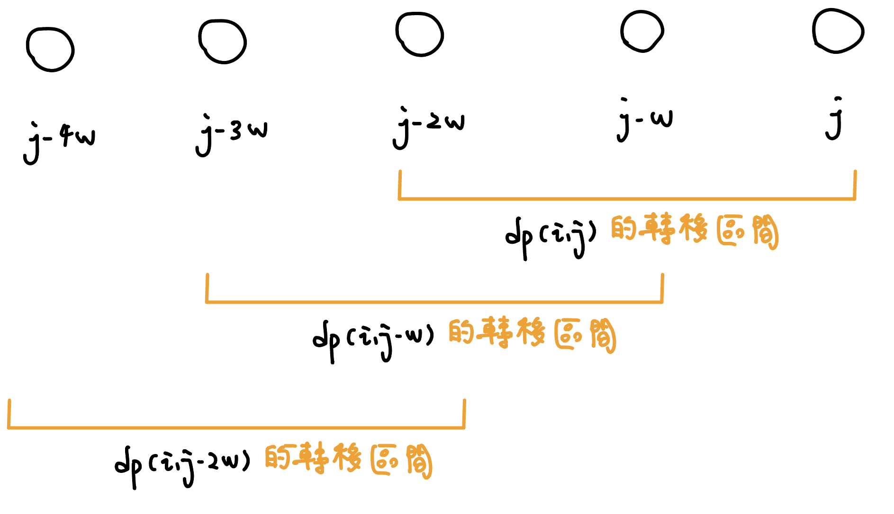
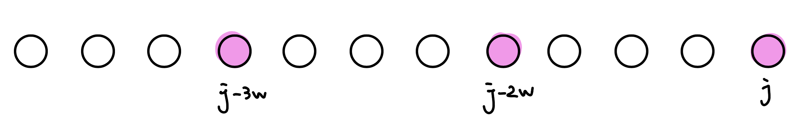
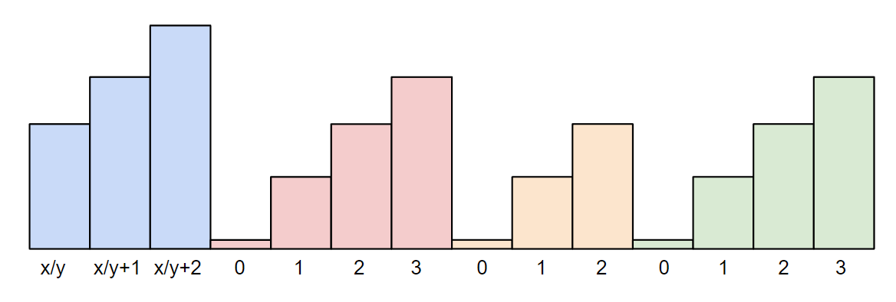
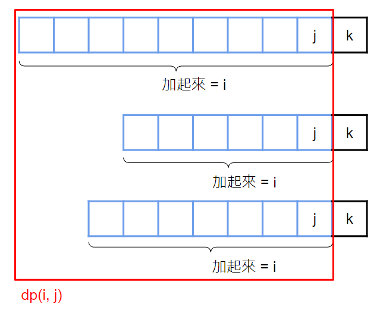

背包問題
01 背包
在某些題目中，要有順序的 dp 才能讓解最優
例如在 Atcoder X. Tower（在 LIS 主題的題目中） 內我們的物品有載重限制，所以我們將載重小的先轉移，再慢慢轉移載重大的情況，因為如果我們不這麼做後面的東西是放不上去的，例如有一個重量 2 載重 2 一個重量 5 載重 5，若我們先放 5，2 無論如何都無法將 5 堆到自己上面，所以最後的答案就只會是放載重 5 這一個物品，而並非 7。
在 CEOI 2018 Cloud computing（在下方題目的 section 中）中，我們若先賣出我們的股票，在這個過程中是沒有辦法轉移的，因為我們沒東西可以賣，在 dp 看來就是 dp[x] = dp[x + w] + v，但此時 dp[x + w] 的狀態都不存在，所以算出來的利潤就會比較小。這就好像你現在很想賣出很多股票，但你手上一張都沒有的概念。
但在一般沒有限制的 01 背包中，我們用什麼順序去轉移都是 ok 的。
Atcoder DP Contest - Knapsack 1 給 \(n\) 種物品的重量 \(w_i\) 與價值 \(v_i\) ，背包容量上限是 \(W\) 。每種物品只有一個。選擇一些物品，使得重量總和不超過容量，請問最大價值總和為何 ?
\(n\le 100, 1\le w_i \le W\le 10^5, 1\le v_i \le 10^9\)
\(dp(i, j)\) 表示前 \(i\) 個物品中，重量總和為 \(j\) 的最大價值。轉移的話考慮拿不拿第 \(i\) 種物品
\[
dp(i, j) = \max \{dp(i - 1, j - w_i) + v_i, dp(i-1, j) \}
\]
初始狀態則將 \(dp(0, 0) = 0, dp(0, j) = -\infty\) 。最後，答案就是 \(\max\{ dp(n, 0), dp(n, 1), \ldots , dp(n, W) \}\)
code
#include <bits/stdc++.h>
using namespace std ;
const int MAXN = 105 ;
const int MAXW = 1e5 + 5 ;
const int INF = 1e9 ;
int v [ MAXN ], w [ MAXN ];
int dp [ MAXN ][ MAXW ];
int main () {
int n , W ;
cin >> n >> W ;
for ( int i = 1 ; i <= n ; i ++ ) {
cin >> v [ i ] >> w [ i ];
}
dp [ 0 ][ 0 ] = 0 ;
for ( int j = 1 ; j <= W ; j ++ ) {
dp [ 0 ][ j ] = - INF ;
}
for ( int i = 1 ; i <= n ; i ++ ) {
for ( int j = 0 ; j <= W ; j ++ ) {
dp [ i ][ j ] = dp [ i - 1 ][ j ];
if ( j >= w [ i ]) {
dp [ i ][ j ] = max ( dp [ i ][ j ], dp [ i - 1 ][ j - w [ i ]] + v [ i ]);
}
}
}
int ans = 0 ;
for ( int j = 0 ; j <= W ; j ++ ) {
ans = max ( ans , dp [ n ][ j ]);
}
cout << ans << endl ;
}
注意到 \(dp(i, j)\) 只會從 \(dp(i-1, *)\) 轉移，所以我們可以使用滾動陣列，紀錄 \(dp(j)\) 即可。在轉移的時候要從大枚舉到小，這樣在轉移的時候才不會轉移到新的狀態
code(滾動陣列)
#include <bits/stdc++.h>
using namespace std ;
const int MAXN = 105 ;
const int MAXW = 1e5 + 5 ;
const int INF = 1e9 ;
int v [ MAXN ], w [ MAXN ];
int main () {
int n , W ;
cin >> n >> W ;
for ( int i = 1 ; i <= n ; i ++ ) {
cin >> w [ i ] >> v [ i ];
}
vector < int > dp ( W + 1 , - INF );
dp [ 0 ] = 0 ;
for ( int i = 1 ; i <= n ; i ++ ) {
for ( int j = W ; j >= w [ i ]; j -- ) {
dp [ j ] = max ( dp [ j ], dp [ j - w [ i ]] + v [ i ]);
}
}
int ans = 0 ;
for ( int j = 0 ; j <= W ; j ++ ) {
ans = max ( ans , dp [ j ]);
}
cout << ans << endl ;
}
方法數
code
vector < int > cnt ( W + 1 );
vector < int > dp ( W + 1 , - INF );
dp [ 0 ] = 0 ;
cnt [ 0 ] = 1 ;
for ( int i = 1 ; i <= n ; i ++ ) {
for ( int j = W ; j >= w [ i ]; j -- ) {
if ( dp [ j ] == dp [ j - w [ i ]] + v [ i ]) {
cnt [ j ] += cnt [ j - w [ i ]];
cnt [ j ] %= M ;
} else if ( dp [ j - w [ i ]] + v [ i ] > dp [ j ]) {
dp [ j ] = dp [ j - w [ i ]] + v [ i ];
cnt [ j ] = cnt [ j - w [ i ]];
cnt [ j ] %= M ;
}
}
}
算方法數 CSES - Two Sets II
給 \(n\) ，問將 \(\{1, 2, \ldots ,n \}\) 分成兩個總和相同的集合，有幾種分法
\(n\le 500\)
code
#include <bits/stdc++.h>
#define int long long
using namespace std ;
const int INF = 0x3f3f3f3f ;
const int M = 1e9 + 7 ;
signed main () {
int n ;
cin >> n ;
vector < int > w ( n + 1 );
vector < int > v ( n + 1 );
int W = 0 ;
for ( int i = 1 ; i <= n ; i ++ ) {
W += i ;
w [ i ] = i ;
v [ i ] = i ;
}
if ( W & 1 ) {
cout << 0 ;
exit ( 0 );
}
W /= 2 ;
vector < int > cnt ( W + 1 );
vector < int > dp ( W + 1 , - INF );
dp [ 0 ] = 0 ;
cnt [ 0 ] = 1 ;
for ( int i = 1 ; i <= n ; i ++ ) {
for ( int j = W ; j >= w [ i ]; j -- ) {
if ( dp [ j ] == dp [ j - w [ i ]] + v [ i ]) {
cnt [ j ] += cnt [ j - w [ i ]];
cnt [ j ] %= M ;
} else if ( dp [ j - w [ i ]] + v [ i ] > dp [ j ]) {
dp [ j ] = dp [ j - w [ i ]] + v [ i ];
cnt [ j ] = cnt [ j - w [ i ]];
cnt [ j ] %= M ;
}
}
}
int mx = - INF ;
cnt [ W ] *= 500000004 ;
cnt [ W ] %= M ;
cout << cnt [ W ];
}
字典序
字典序
給 \(n\) 種物品的重量 \(w_i\) 與價值 \(v_i\) ，背包容量上限是 \(W\) 。每種物品只有一個。選擇一些物品，使得重量總和不超過容量，請問最大價值總和為何，輸出編號字典序最小的解
\(n\le 100, 1\le w_i \le W\le 10^5, 1\le v_i \le 10^9\)
思路
因為字典序需要從頭開始考慮反過來建 dp 表格就好
code
#include <bits/stdc++.h>
#define int long long
using namespace std ;
const int INF = 0x3f3f3f3f ;
const int MAXN = 1e3 + 5 ;
int dp [ MAXN ][ MAXN ];
int w [ MAXN ], v [ MAXN ];
int n , W ;
signed main () {
cin >> n >> W ;
for ( int i = 1 ; i <= n ; i ++ ) {
cin >> w [ i ] >> v [ i ];
}
memset ( dp , - INF , sizeof dp );
dp [ n + 1 ][ 0 ] = 0 ;
int total_w , mx = 0 ;
for ( int i = n ; i > 0 ; i -- ) {
for ( int j = 0 ; j <= W ; j ++ ) {
if ( w [ i ] > j ) {
dp [ i ][ j ] = dp [ i + 1 ][ j ];
} else {
dp [ i ][ j ] = max ( dp [ i + 1 ][ j ], dp [ i + 1 ][ j - w [ i ]] + v [ i ]);
}
if ( mx < dp [ i ][ j ]) {
mx = dp [ i ][ j ];
total_w = j ;
}
}
}
cout << dp [ 1 ][ total_w ] << " \n " ;
for ( int i = 1 ; i <= n ; ++ i ) {
if ( total_w >= w [ i ] && dp [ i ][ total_w ] == dp [ i + 1 ][ total_w - w [ i ]] + v [ i ]) {
cout << i << ' ' ;
total_w -= w [ i ];
}
}
}
習題
超大背包 Atcoder DP Contest - Knapsack 2
給 \(n\) 種物品的重量 \(w_i\) 與價值 \(v_i\) ，背包容量上限是 \(W\) 。每種物品只有一個。選擇一些物品，使得重量總和不超過容量，請問最大價值總和為何 ?
\(n\le 100, 1\le w_i \le W\le 10^9, 1\le v_i \le 10^3\)
思路
dp(i, j) = 取到價值 j 的最小重量
dp(i, j) = min{dp(i - 1, j), dp(i - 1, j - v_i) + w_i}
最後答案就是 min{dp(n, 0), dp(n, 1), ... , dp(n, W)}
code
#include <bits/stdc++.h>
#define int long long
using namespace std ;
const int MAXN = 1e2 + 5 ;
const int MAXV = 2e5 ;
const int INF = ( 1L L << 60 );
int n , m ;
int w [ MAXN ], v [ MAXN ];
signed main () {
cin >> n >> m ;
for ( int i = 1 ; i <= n ; i ++ ) {
cin >> w [ i ] >> v [ i ];
}
vector < int > dp ( MAXV + 1 , INF );
dp [ 0 ] = 0 ;
for ( int i = 1 ; i <= n ; i ++ ) {
for ( int j = MAXV ; j >= v [ i ]; j -- ) {
dp [ j ] = min ( dp [ j ], dp [ j - v [ i ]] + w [ i ]);
}
}
for ( int j = MAXV ; j >= 0 ; j -- ) {
if ( dp [ j ] <= m ) {
cout << j << '\n' ;
exit ( 0 );
}
}
}
變化: n = 40
給 \(n\) 種物品的重量 \(w_i\) 與價值 \(v_i\) ，背包容量上限是 \(W\) 。每種物品只有一個。選擇一些物品，使得重量總和不超過容量，請問最大價值總和為何 ?
\(n\le 40, 1\le w_i \le W\le 10^9, 1\le v_i \le 10^9\)
思路
使用折半枚舉，枚舉第一個集合內的元素，用二分搜或雙指針看第二個集合內合法的元素
code
#include <algorithm>
#include <iostream>
#include <utility>
#include <vector>
using namespace std ;
using pii = pair < int , int > ; // (重量, 價值)
// A 的長度是 2^|a|，存放 a 所有子集合總和
vector < pii > allSubsetSum ( vector < pii > a ) {
int n = a . size ();
vector < pii > A = {{ 0 , 0 }};
for ( int i = 0 ; i < n ; i ++ ) {
for ( int j = A . size () - 1 ; j >= 0 ; j -- ) {
A . push_back ({ A [ j ]. first + a [ i ]. first , A [ j ]. second + a [ i ]. second });
}
}
sort ( A . begin (), A . end ());
for ( int i = 1 ; i < A . size (); i ++ ) {
A [ i ]. second = max ( A [ i ]. second , A [ i - 1 ]. second );
//他如果放得下那也一定有辦法改成能比他重量小的價值
}
return A ;
}
int main () {
cin . tie ( 0 );
cin . sync_with_stdio ( 0 );
int n , W ;
vector < pii > a , b ;
cin >> n >> W ;
for ( int i = 0 ; i < n ; i ++ ) {
int w , v ;
cin >> w >> v ;
if ( i < n / 2 ) {
a . push_back ({ w , v });
} else {
b . push_back ({ w , v });
}
}
int ans = 0 ; // w 總和小於等於 W 的最大 v 總和
vector < pii > A = allSubsetSum ( a );
vector < pii > B = allSubsetSum ( b );
for ( pii x : B ) {
auto it = upper_bound ( A . begin (), A . end (), pii { W - x . first , INT_MAX });
if ( it != A . begin ()) {
it = prev ( it );
ans = max ( ans , x . second + it -> second );
}
}
cout << ans << '\n' ;
return 0 ;
}
第 k 大
給 \(n\) 種物品的重量 \(w_i\) 與價值 \(v_i\) ，背包容量上限是 \(W\) 。每種物品只有一個。選擇一些物品，問能湊出第 \(k\) 大的價值為何
\(n\le 40, 1\le w_i \le W\le 10^9, 1\le v_i \le 10^3\)
思路
一樣利用折半枚舉，用二分搜最大的 t，使價值 >= t 的恰有 k 個。至於要怎麼計算價值 >= t 有幾個呢 ? 枚舉第一個集合內的元素 (w1[i], v1[i])，用雙指針的方式找到在第二個元素合法的部分，利用 DS 詢問價值 >= t - v1[i] 有幾個，可以用 BIT 做到
code
#include <bits/stdc++.h>
using namespace std ;
vector < long long > d ;
long long bit [ 1 << 21 ];
vector < pair < long long , long long >> gen_subset ( vector < pair < int , int >> v ) {
vector < pair < long long , long long >> ret ;
for ( int i = 0 ; i < ( 1 << v . size ()); i ++ ) {
long long sum_w = 0 , sum_v = 0 ;
for ( int j = 0 ; j < v . size (); j ++ ) {
if ( i & ( 1 << j )) {
sum_w += v [ j ]. first ;
sum_v += v [ j ]. second ;
}
}
ret . push_back ({ sum_w , sum_v });
}
return ret ;
}
int bit_query ( int x ) {
int ret = 0 ;
while ( x ) {
ret += bit [ x ];
x -= x & ( - x );
}
return ret ;
}
void bit_update ( int x ) {
while ( x <= d . size ()) {
bit [ x ] ++ ;
x += x & ( - x );
}
}
int main () {
int n ;
long long k , lim ;
cin >> n >> k >> lim ;
vector < pair < int , int >> p1 , p2 ;
for ( int i = 0 ; i < n / 2 ; i ++ ) {
long long a , b ;
cin >> a >> b ; // weight, value
p1 . push_back ({ a , b });
}
for ( int i = n / 2 ; i < n ; i ++ ) {
long long a , b ;
cin >> a >> b ;
p2 . push_back ({ a , b });
}
vector < pair < long long , long long >> v1 , v2 ;
v1 = gen_subset ( p1 );
v2 = gen_subset ( p2 );
sort ( v1 . begin (), v1 . end ());
sort ( v2 . rbegin (), v2 . rend ());
for ( auto & i : v1 ) {
d . push_back ( i . second );
}
sort ( d . begin (), d . end ());
d . erase ( unique ( d . begin (), d . end ()), d . end ());
long long l = 0 , r = 1e12 ;
while ( r - l > 1 ) {
long long mid = ( l + r ) / 2 ;
int ptr = 0 ;
long long cnt = 0 ;
memset ( bit , 0 , sizeof ( bit ));
for ( auto & i : v2 ) {
while ( ptr < v1 . size () && v1 [ ptr ]. first + i . first <= lim ) {
int idx = lower_bound ( d . begin (), d . end (), v1 [ ptr ]. second ) - d . begin () + 1 ;
bit_update ( idx );
ptr ++ ;
}
int idx = lower_bound ( d . begin (), d . end (), mid - i . second ) - d . begin () + 1 ;
cnt += ptr - bit_query ( idx - 1 );
}
if ( cnt < k ) { // 價值 >= x 的方法數
r = mid ;
} else {
l = mid ;
}
}
cout << l << endl ;
}
/*
Input
4 3 3
1 2
1 3
1 7
1 12
Output
19
*/
Zerojudge c835. 背包問題 給你 \(n\) 個物品，背包重量限制為 \(2^W\) ，每個物品的重量是 \(2^{w_i}\) ，價值是 \(v_i\) ，求能放到背包內的最大價值和
思路
採用 Greedy，我們可以從小的次方做到大的次方，對於每一位，我們開一個 Max Heap 來記錄當前物品的價值，然後我們要想辦法從小的變化到大的，注意到 \(2^{n-1}+2^{n-1} \le 2^n\) ，我們可以讓 Max Heap 內價值最高的兩個合併成一個東西，放到更高一位的 Heap 內，若最後還剩下一個，則單獨放到 Heap 內。最後答案就是第 \(W\) 位 Max Heap 價值最高的東西
code
void solve () {
cin >> n >> m ;
for ( int i = 0 ; i < n ; ++ i ) {
int w , v ;
cin >> w >> v ;
if ( w <= m ) {
pq [ w ]. push ( v );
}
}
for ( int i = 0 ; i < m ; ++ i ) {
while ( ! pq [ i ]. empty ()) {
if ( pq [ i ]. size () == 1 ) {
pq [ i + 1 ]. push ( pq [ i ]. top ());
break ;
}
ll a = pq [ i ]. top ();
pq [ i ]. pop ();
ll b = pq [ i ]. top ();
pq [ i ]. pop ();
pq [ i + 1 ]. push ( a + b );
}
}
cout << pq [ m ]. top () << " \n " ;
}
TOI 2008 p3. 加減問題 有 \(n\) 個正整數 \(a_1, \ldots ,a_n\) ，對於每個數賦予 \(\texttt{+}\) 或 \(\texttt{-}\) 使得他們總合為 \(0\) ，問是否做得到
有 \(t\) 筆輸入，\(t\le 10, n\le 100, 1\le a_i\le 1000\)
思路
令 \(\sum a_i = s\) ，就只是問能不能選出 \(s/2\)
分組背包
給定 \(n\) 個物品，背包容量 \(W\) ，第 \(i\) 個物品重量 \(w_i\) ，價值 \(v_i\) ，組別是 \(k_i\) 。選擇一些物品，每組最多選 \(1\) 個，共有 \(k\) 組，使得重量總和不超過容量，請問最大價值總和為何 ?
\(n, k\le 100, w\le 10^5\)
思路
令 dp(i, j) = 前 i 組 重量是 j 可以選到的最大價值總和
轉移的話就枚舉第 i 組裡面的物品，假設目前枚舉到 u
dp(i, j) = max{dp(i - 1, j), dp(i - 1, j - w[u]) + v[u]}
因為 \(\sum \limits_{i=1}^k a_i=n\) ，所以複雜度為 O(nW)
code
for ( int i = 1 ; i <= k ; i ++ ) {
for ( int j = W ; j >= 0 ; j -- ) {
for ( auto u : a [ i ]) {
if ( j - w [ u ] >= 0 ) {
dp [ i ][ j ] = max ( dp [ i - 1 ][ j ], dp [ i - 1 ][ j - w [ u ]] + v [ u ]);
}
}
}
}
無限背包
洛谷 P1616 疯狂的采药 給 \(n\) 種物品的重量 \(w_i\) 與價值 \(v_i\) ，背包容量上限是 \(W\) 。每種物品只有一個。選擇一些物品，使得重量總和不超過容量，請問最大價值總和為何 ?
\(n\le 10^4, 1\le n\times W\le 10^7, 1\le w_i, v_i \le 10^4\)
跟 01 背包差不多，但要注意在轉移的時候，對於 \(dp(i, j)\) 取完物品 \(i\) 後狀態依然會停留在 \(dp(i,j-w_i)\) 而非 \(dp(i-1,j-w_i)\)
\[
dp(i, j) = \max \{dp(i, j - w_i) + v_i, dp(i-1, j) \}
\]
最後，答案就是 \(\max\{ dp(n, 0), dp(n, 1), \ldots , dp(n, W) \}\) 。
實作上也可以使用滾動陣列，但需要從前往後轉移，因為後面的 dp(i, j) 會用到前面新的狀態。複雜度 \(O(nW)\)
code
#include <bits/stdc++.h>
#define int long long
using namespace std ;
const int MAXN = 1e4 + 5 ;
const int INF = 1e9 ;
int n , m ;
int w [ MAXN ], v [ MAXN ];
signed main () {
cin >> m >> n ;
for ( int i = 1 ; i <= n ; i ++ ) {
cin >> w [ i ] >> v [ i ];
}
vector < int > dp ( m + 1 , - INF );
dp [ 0 ] = 0 ;
for ( int i = 1 ; i <= n ; i ++ ) {
for ( int j = w [ i ]; j <= m ; j ++ ) {
dp [ j ] = max ( dp [ j ], dp [ j - w [ i ]] + v [ i ]);
}
}
cout << * max_element ( dp . begin (), dp . end ()) << '\n' ;
}
有限背包
CSES - Book Shop II 給 \(n\) 種物品的重量 \(w_i\) ，價值 \(v_i\) ，數量 \(c_i\) ，背包容量上限是 \(W\) 。選擇一些物品，使得重量總和不超過容量，請問最大價值總和為何 ?
\(n\le 100, 1\le W \le 10^5, 1\le w_i,v_i,c_i \le 1000\)
每個物品的 \(c_i\) 個都當成一個物品，套用 01 背包。複雜度 \(O(nW\max \{ c_i \})\)
二進制拆解優化
把 c 個一樣的物品拆成 log c 個不同的物品，執行 0/1 背包。例如有一種東西有 13 個，13 = 1 + 2 + 4 + 6，我們就按照 1 個、2 個、4 個、6 個把東西打包，變成 01 背包，這樣我們就可以組出在 [1, 13] 內任意的數字了。複雜度 \(O(nW\log c_i)\)
正確性證明
我們都知道，若我們有 \(2^0, 2^1, 2^2, \ldots ,2^n\) 幾個數字，那我們可以表示 \([1, 2^{(n + 1)} - 1]\) 內的所有數字。相似的，若我們想要湊出一個 \(c\) 以內所有的數字，我們可以將 \(c\) 拆解為 \(k\) 與 \(2^{n+1} - 1\) 兩個部分，並使 \(n\) 盡量大，接著 \(2^{n+1} - 1\) 便可以拆解為 \(2^0, 2^1, 2^2, \ldots ,2^n\) 。如此一來我們就可以湊出 \([1, 2^{(n + 1)} - 1]\) 的所有數字以及 \([1+k, 2^{(n + 1)}-1+k]\) 的所有數字，聯集起來，就是可以表示 \([1, c]\) 的所有數字。例如 \(c=10\) ，\(10=(1+2+4)+3\) ，代表我們可以湊出 \([1, 7] \cup [3, 10]\) 的所有數字。若需背包一種數量有 \(c\) 個的物品，就可以依照上法將之拆為 \(\log(c) + 1\) 團，我們只需要將每團各自視為一個新的物體拿去背包即可。
相關議題: 砝碼問題
code
#include <bits/stdc++.h>
#define int long long
using namespace std ;
const int MAXN = 1e2 + 5 ;
const int MAXW = 1e5 + 5 ;
const int INF = 1e9 ;
int n , m ;
int w [ MAXN ], v [ MAXN ], c [ MAXN ];
int solve ( vector < pair < int , int >> items ) {
vector < int > dp ( m + 1 , - INF );
dp [ 0 ] = 0 ;
for ( auto [ w , v ] : items ) {
for ( int j = m ; j >= w ; j -- ) {
dp [ j ] = max ( dp [ j ], dp [ j - w ] + v );
}
}
return * max_element ( dp . begin (), dp . end ());
}
signed main () {
cin >> n >> m ;
for ( int i = 1 ; i <= n ; i ++ ) {
cin >> w [ i ];
}
for ( int i = 1 ; i <= n ; i ++ ) {
cin >> v [ i ];
}
for ( int i = 1 ; i <= n ; i ++ ) {
cin >> c [ i ];
}
vector < pair < int , int >> vec ;
for ( int i = 1 ; i <= n ; i ++ ) {
int k = 1 ;
while ( k <= c [ i ]) {
vec . push_back ({ w [ i ] * k , v [ i ] * k });
c [ i ] -= k ;
k *= 2 ;
}
if ( c [ i ] > 0 ) {
vec . push_back ({ w [ i ] * c [ i ], v [ i ] * c [ i ]});
}
}
cout << solve ( vec ) << '\n' ;
}
單調對列優化
我們先列出轉移式
\[
dp(i,j)=\max \begin{cases} dp(i-1, j) \\ dp(i-1, j- w) + v \\ dp(i-1, j-2w) + v \\ \vdots \\ dp(i-1,j-kw)+kv\end{cases}
\]
可以發現，對於 dp(i, j)，他能轉移的點可能是 j - 2w, j - w, j，對於 dp(i, j - w)，他能轉移的點可能是 j - 3w, j - 2w, j - w，注意到這個區間的左界、右界會隨著 j 的增長持續遞增，可以使用類似用單調隊列維護 Sliding Window 的技巧來解決

所以對於 dp(i, *) 中 j % w 相同的狀態，我們都用一個單調隊列來維護答案

複雜度每個狀態都只會進, 出單調隊列各一次，所以複雜度是 O(nW)
code
#include <bits/stdc++.h>
#define int long long
#define ALL(x) x.begin(),x.end()
using namespace std ;
const int MAXN = 1e2 + 5 ;
const int MAXW = 1e5 + 5 ;
int n , m ;
int w [ MAXN ], v [ MAXN ], c [ MAXN ];
int g [ MAXW ], dp [ MAXW ];
signed main () {
cin >> n >> m ;
for ( int i = 1 ; i <= n ; i ++ ) {
cin >> w [ i ];
}
for ( int i = 1 ; i <= n ; i ++ ) {
cin >> v [ i ];
}
for ( int i = 1 ; i <= n ; i ++ ) {
cin >> c [ i ];
}
for ( int i = 1 ; i <= n ; i ++ ) {
memcpy ( g , dp , sizeof ( g ));
for ( int r = 0 ; r < w [ i ]; r ++ ) {
deque < int > dq ;
for ( int j = r ; j <= m ; j += w [ i ]) {
while ( ! dq . empty () && g [ dq . back ()] + (( j - dq . back ()) / w [ i ]) * v [ i ] <= g [ j ]) {
dq . pop_back ();
}
dq . push_back ( j );
dp [ j ] = g [ dq . front ()] + (( j - dq . front ()) / w [ i ]) * v [ i ];
if ( dq . front () == j - c [ i ] * w [ i ]) {
dq . pop_front ();
}
}
}
}
cout << dp [ m ] << '\n' ;
}
其他
分數背包
貪心法錯誤
\(n=3,W=6\)
\(v_1=4,w_1=5\)
\(v_2=3,w_2=3\)
\(v_3=3,w_3=3\)
按照 Greedy，就只能放入第 1 個物品，總價值為 \(5\) ，但是最優解，應該放入第 2, 3 個物品，總價值為 \(6\)
之所以貪心法會失效，原因在於背包的體積，優先選 CP 值高的物品，可能會導致一些空間被浪費，以前面的例子來說，就是浪費 2 單位的空間
反過來說，下面的題目「2021 全國賽 pA. 礦砂採集」就可以使用貪心法:
物品可以切割，換句話說就是可以取 0.5 個、0.7 個物品，這樣一來，就沒有浪費空間的問題，而可以使用攤新法了
\(n=3,W=6\)
\(v_1=4,w_1=5\)
\(v_2=3,w_2=3\)
\(v_3=3,w_3=3\)
取 1 個第一件物品，2/3 個第二件物品，總價值為 7
2021 全國賽 pA. 礦砂採集 給 \(n\) 種物品的重量 \(w_i\) 與價值 \(v_i\) ，背包容量上限是 \(W\) 。每種物品只有一個，物品可以切割 ，選擇一些物品，使得重量總和不超過容量，請問最大價值總和為何 ?
\(n\le 1000, 1\le W\le 10^5, 1\le w_i\le 100, 1\le v_i \le 1000\)
思路
這個題目在 wiki 上叫連續背包問題
【結論】: 只要不斷 Greedy 地將單位重量價值最大的物品放進背包，直到背包已滿或所有物品均已被放入，就能最大化總價值。
一個簡單的做法是將所有物品依照單位重量價值由大到小排序，依序放入背包直到滿即可。複雜度是 \(O(n \log n)\) 。
線性做法
以下為了方便說明，假定所有的 \(x_i\) 均相異，其中 \(x_i=v_i/w_i\) 。
隨機選擇一個礦砂 \(i\) ，並將所有的物品分為單位價值 \(\ge x_i\) 與 \(< x_i\) 兩堆。
分歧判斷：
若單位價值 \(\ge x_i\) 的物品可以塞滿背包，則將 \(< x_i\) 的礦砂全刪除，並往大的 \(x\) 找答案。
反之則將價值 \(\ge x_i\) 的礦砂全刪除，往小的 \(x\) 找答案。
搜尋完後得到的值代表「總價值最大時，背包中單位重量價值最小的物品」，再用這個價值去反求答案。
實作上可以使用 nth_element 做到，演算法與 quickselect 和 這個技巧 非常相似，期望時間複雜度為 \(O(n)\) 。
bitset
補充: 退背包
帶刪除背包 - 問方法數
給一些物品，第 i 個物品的重量為 w[i]，分別輸出若刪除第 i 個物品，能湊到重量為 m 的方案數 是多少
背包問題是可逆的 。退背包就是從有選的物品中刪除其中一個物品，問滿足所取能湊到重量為 j 的方案數 。像一般背包一樣，退背包先普通 dp 一下，然後退去所選物品。設 f(i, j) 為只用前 i 件物品，不考慮刪除任何物品時，恰好裝滿容量為 j 的方法數，設 g(i, j) 為不考慮物品 i，恰好裝滿容量為 j 的方法數。f(i, j) 就用普通的 01 背包轉移即可，而 g(i, j) 在轉移時就要從 f(i, j) 扣掉「有選 i 個方法數」，如下:
g(i, j) = f(i, j) - g(i, j - w[i])
CF 1442 D. sum 給定 \(n\) 個單調不降的序列，可以從這些序列的最左端依次往右取，問取 \(k\) 個數的最大值
\(n,k\le 3000, 0\le a_{i,j}\le 10^8, \sum |a_i| \le 10^6\)
思路
有一個序列的取部分元素，其他序列要馬全取，要馬全不取。因為若部分取兩個序列，一定可以專注取其中一個一定會更好。所以問題就轉換成 01 背包了，我們可以去枚舉哪個序列要取一部分，剩下做 01 背包（枚舉 i 代表從這個序列取 i 個，其他序列就是取 k - i 個，可以從 01 背包的 dp(k - i) 查表）。我們想辦法優化這個過程，考慮分治，當遞迴到每個 leaf 就是不包含該項的 01 背包，複雜度 \(O(nk \log n)\) 。
code
#include <bits/stdc++.h>
#define int long long
#define pii pair<int, int>
#define mk make_pair
#define pb push_back
using namespace std ;
const int MAXN = 3e3 + 5 ;
const long long mod = 1e9 + 7 ;
int n , k , ans ;
int a [ MAXN ][ MAXN ];
int t [ MAXN ];
int tot [ MAXN ];
int dp [ MAXN ];
void solve ( int l , int r ) {
if ( l > r ) return ;
if ( l == r ) {
int cur = 0 ;
for ( int i = 0 ; i <= t [ l ]; i ++ ) {
cur += a [ l ][ i ];
ans = max ( dp [ k - i ] + cur , ans );
}
return ;
}
int mid = ( l + r ) >> 1 ;
vector < int > tmp ( k + 1 );
for ( int i = 1 ; i <= k ; i ++ ) {
tmp [ i ] = dp [ i ];
}
for ( int i = mid + 1 ; i <= r ; i ++ ) {
for ( int j = k ; j >= t [ i ]; j -- ) {
dp [ j ] = max ( dp [ j ], dp [ j - t [ i ]] + tot [ i ]);
}
}
solve ( l , mid );
for ( int i = 1 ; i <= k ; i ++ ) dp [ i ] = tmp [ i ];
for ( int i = l ; i <= mid ; i ++ ) {
for ( int j = k ; j >= t [ i ]; j -- ) {
dp [ j ] = max ( dp [ j ], dp [ j - t [ i ]] + tot [ i ]);
}
}
solve ( mid + 1 , r );
}
signed main () {
ios :: sync_with_stdio ( 0 );
cin . tie ( 0 );
cin >> n >> k ;
for ( int i = 1 ; i <= n ; i ++ ) {
cin >> t [ i ];
int x ;
for ( int j = 1 ; j <= t [ i ]; j ++ ) {
if ( j <= k ) {
cin >> a [ i ][ j ];
} else {
cin >> x ;
}
if ( j <= k ) tot [ i ] += a [ i ][ j ];
}
if ( t [ i ] > k ) t [ i ] = k ;
}
solve ( 1 , n );
cout << ans ;
}
洛谷 P4141 消失之物 有 \(n\) 個物品，體積分別是 \(w_1,w_2,\dots,w_n\) 。第 \(i\) 個物品丟失了。
「要使用剩下的 \(n-1\) 物品裝滿容積為 \(x\) 的背包，有幾種方法呢 ?」
把答案記為 \(\text{cnt}(i,x)\) ，輸出所有 \(i \in [1,n], x \in [1,m]\) 的 \(\text{cnt}(i, x)\) 。
\(n,m\le 2\times 10^3\)
思路
設 f[i][j] 為只用前 i 件物品，不考慮刪除任何物品時，恰好裝滿容量為 j 的方法數，設 g[i][j] 為不考慮物品 i 的貢獻恰好裝滿容量為 j 的方法數。我們列出轉移式 :
g[i][j] = f[n][j] - g[i][j - w[i]]
此時的 g[i][j - w[i]] 恰好刪除了物品 i 的貢獻
參考自 : https://blog.csdn.net/qq_50332374/article/details/124864380
經典退背包例題 Atcoder abc321 F - #(subset sum = K) with Add and Erase
有 q 筆操作，第 i 次會新增一個物品或移除一個物品，體積為 w[i]，並回答:
「用目前所剩的物品裝滿容量為 x 的背包，有幾種方法呢 ?」
\(1\le q, x, w_i \le 5000\)
思路
新增物品 w: 也就是普通的背包 dp，我們枚舉 i 從大到小，然後將 dp(i) += dp(i - w)
刪除物品 w: 也就是上面提到的退背包，我們其實可以不用真的去維護 g(i, j)，只要去枚舉 i 從小到大，然後將 dp(i) -= dp(i - w)，因為從小作到大的話 dp(i - w) 已經是不包含物品 i 的方法數了。
code
#include <bits/stdc++.h>
#define int long long
using namespace std ;
const int MAXN = 5005 ;
const int M = 998244353 ;
int n , m ;
int dp [ MAXN ];
signed main () {
cin >> n >> m ;
dp [ 0 ] = 1 ;
char op ;
int w ;
for ( int i = 0 ; i < n ; i ++ ) {
cin >> op >> w ;
if ( op == '+' ) {
for ( int i = m ; i >= w ; i -- ) {
dp [ i ] += dp [ i - w ];
dp [ i ] %= M ;
}
} else {
for ( int i = w ; i <= m ; i ++ ) {
dp [ i ] -= dp [ i - w ];
dp [ i ] = ( dp [ i ] % M + M ) % M ;
}
}
cout << dp [ m ] << endl ;
}
}
資訊之芽 dpII - 可回溯換零錢問題
有 n 種硬幣 c[1], c[2], …, c[n]，求對於所有長度 k 的區間，湊出 m 的方法數有幾種？
要求 O(nm)
思路
同 Atcoder 那題的退背包，類似 two pointer 的方法維護即可。
題目
CF 19 B. Checkout Assistant 有 \(n\) 件物品，每件物品有價格 \(c_i\) 和收銀員掃描時間 \(t_i\) ，當收銀員掃描物品時，可以偷物品，偷一件物品只需一秒，求最少需要花費多少錢（物品順序可以隨意決定）
\(n\le 2000,\le 0\le t_i\le 2000,1\le c_i\le 10^9\)
思路
掃描一件物品需要 \(t_i\) 時間，言外之意就是在此期間，我們可以偷走 \(t_i\) 件物品，也就是對於第 \(i\) 件物品，我們可以得到 \(t_i+1\) 件物品。問題就轉化為 :
給 \(n\) 件物品，第 \(i\) 件物品重量是 \(t_i+1\) ，花費是 \(c_i\) ，求至少 得到 \(n\) 個重量所需的最小花費。
\(dp[i][j]=\) 考慮前 \(i\) 個物品，得到重量總合為 \(j\) 最小花費
\(dp[i][j]=\min \begin{cases} dp[i - 1][j] \\ dp[i - 1][j - (t_i + 1)] + c_i\end{cases}\)
重量總和最大有可能到 \(2n\) （前面的 \(\sum (t_i+1)=n-1\) ，最後來了一個 \(t_i+1=n+1\) 的），所以複雜度 \(O(n\times 2n)\)
code
#include <bits/stdc++.h>
#define int long long
#define pii pair<int, int>
#define pb push_back
#define mk make_pair
#define F first
#define S second
#define ALL(x) x.begin(), x.end()
using namespace std ;
const int INF = 2e18 ;
const int maxn = 3e5 + 5 ;
const int M = 1e9 + 7 ;
struct Item {
int t , c ;
};
int n , W ;
vector < Item > items ;
void init () {
cin >> n ;
for ( int i = 0 ; i < n ; i ++ ) {
int t , c ;
cin >> t >> c ;
W = max ( W , t );
items . pb ({ t , c });
}
W += n ;
}
void solve () {
vector < int > dp ( W + 1 , INF );
dp [ 0 ] = 0 ;
for ( int i = 0 ; i < n ; i ++ ) {
int t = items [ i ]. t , c = items [ i ]. c ;
for ( int j = W ; j >= ( t + 1 ); j -- ) {
dp [ j ] = min ( dp [ j ], dp [ j - ( t + 1 )] + c );
}
}
int mn = INF ;
for ( int j = n ; j <= W ; j ++ ) {
mn = min ( mn , dp [ j ]);
}
cout << mn << '\n' ;
}
signed main () {
init ();
solve ();
}
Sloane's Box Stacking Problem Atcoder dp contest X. Tower
有 \(n\) 個箱子，每個箱子有 \((w,s,v)\) 代表重量、抗壓量、高度。一個箱子上方的重量總和，不能超過這個箱子的抗壓力量。問最多能疊多高 ?
\(1\le n\le 10^3,1\le w_i, s_i\le 10^4,1\le v_i\le 10^9\)
思路
考慮 Exchange Arguements，我們拿兩個箱子 \(i\) 跟 \(j\) 來比較。\(j\) 可以放比較下面 iff \(s_i - w_j < s_j - w_i\) 。
當我們將陣列用上面的 Exchange Arguements sort 好後，我們做類似背包問題，\(dp(i,j)=\) 考慮 \(1\ldots i\) ，重量總和 \(\le j\) 能取到的最大高度。轉移的話一樣考慮取 \(i\) 或不取 \(i\) ，取 \(i\) 的話剩下的重量就必須 \(\le s_i\)
\[dp(i, j)=\max \begin{cases} dp(i - 1, j - w_i)+v_i \space \text{if}\space 0 \le j - w_i \le s_i \\ dp(i - 1, j)\end{cases}\]
code
#include <bits/stdc++.h>
using namespace std ;
using ll = long long ;
const int N = 1010 , M = 20010 ;
struct faner {
int w , s , v ;
} a [ N ];
ll f [ M ], ans ;
bool cmp ( faner a , faner b ) {
return a . s + a . w < b . s + b . w ;
}
int main () {
int n ;
cin >> n ;
for ( int i = 1 ; i <= n ; i ++ ) {
cin >> a [ i ]. w >> a [ i ]. s >> a [ i ]. v ;
}
sort ( a + 1 , a + n + 1 , cmp );
for ( int i = 1 ; i <= n ; i ++ ) {
for ( int j = M - 1 ; j >= a [ i ]. w ; j -- ) {
if ( a [ i ]. s + a [ i ]. w >= j ) {
f [ j ] = max ( f [ j ], f [ j - a [ i ]. w ] + a [ i ]. v );
}
}
}
for ( int i = 1 ; i < M ; i ++ ) {
ans = max ( ans , f [ i ]);
}
cout << ans << '\n' ;
}
洛谷 P4394 选举 給一個長度為 \(n\) 的陣列 \(a_1, \ldots ,a_n\) ，選一些 \(a_i\) ，使得:
問有選的 \(a_i\) 總和最大是多少
\(1\le n\le 300\)
思路
「捨棄掉一個 \(a_i\) ，剩餘有選的 \(a_i\) 總和必須 \(\sum a_i / 2\) 」這個條件相當於: 將最小的捨棄，剩餘有選的 \(a_i\) 總和必須 \(\sum a_i / 2\)
我們發現「有選的 \(a_i\) 」就是一個背包問題裡面所選的集合，而捨棄最小的，我們可以將 \(a_i\) 由小到大 sort，然後反著做背包問題（\(dp(i, j)\) 表示後 \(i\) 個物品是否能湊到 j），這樣我們當前枚舉到的 \(a_i\) 就會是當前集合內最小的了
code
#include <bits/stdc++.h>
using namespace std ;
int a [ 305 ];
int dp [ 100005 ];
int main () {
int n ;
cin >> n ;
int sum = 0 ;
for ( int i = 1 ; i <= n ; i ++ ) {
cin >> a [ i ];
sum += a [ i ];
}
sort ( a + 1 , a + n + 1 );
dp [ 0 ] = 1 ;
int ans = 0 ;
for ( int i = n ; i >= 1 ; i -- ) {
for ( int j = sum ; j >= a [ i ]; j -- ) {
dp [ j ] |= dp [ j - a [ i ]];
if ( dp [ j - a [ i ]] == 0 ) continue ;
if ( j - a [ i ] <= sum / 2 && j > sum / 2 ) {
ans = max ( ans , j );
}
}
}
cout << ans << '\n' ;
}
BOI 2019 Day2 p1. Tom's Kitchen 有 \(n\) 個工作，\(m\) 個工具，每個工作至少要用 \(k\) 個不同的工具。第 \(i\) 個工作所需的工具數量為 \(a_i\) ，而第 \(j\) 個工具有 \(b_j\) 個，問有用到的工具裡面，剩下的總數最少是多少
\(1\le n,m,k,a_i,b_j\le 300\)
思路
當 \(a_i<k\) 時，無解。一個合法的方案需要:
總數量 \(\ge \sum a_i\)
distinct 的數量 \(\ge n\times k\) （這樣就能滿足每個工作至少要用 \(k\) 個不同的工具）
這是一個背包的模型。設 \(dp(i, j)\) 表示考慮前 \(i\) 個工具，總數量為 \(j\) 時，distinct 數量最大是多少。對於每個狀態，有兩種決策：
不選第 \(i\) 個工具，\(dp(i, j) = dp(i - 1, j)\)
選第 \(i\) 個工具，\(dp(i, j) = dp(i - 1, j - b_i)+\min\{n,b_i \}\)
最終答案就是 \(dp(m, j)\ge n \times k\) 且 \(j\ge \sum a_i\) 的最小的 \(j\)
CF 1928 E. Modular Sequence 給定兩個整數 \(x\) 和 \(y\) ，以及一個整數 \(s\) 。定義一個長度為\(n\) 的數列 \(a\) 是好的當且僅當 \(a_1 = x\) 且 \(a_{i+1} = a_i + y\) 或 \(a_{i+1} \equiv a_i \pmod {y}\) 。問是否存在長度為 \(n\) 的好序列，其元素總和等於 \(s\) 。如果存在，需要找出任一個這樣的序列。
\(\sum n, \sum s \le 2\times 10^5\)
思路
觀察到對任意的 \(i\) 都有 \(a_i \equiv x \pmod{y}\) ，因此可以先給 \(s\) 減去 \(n \times (x \bmod y)\) ，剩下的部分一定是非負的 \(y\) 的倍數，否則顯然不合法。
令 \(s = \dfrac{s - n \times (x \bmod y)}{y}, a_1 = \left\lfloor\dfrac{x}{y}\right\rfloor\) ，於是問題轉化為：求一個數列，滿足第一項為新的 \(a_1\) ，和為新的 \(s\) ，能否由若干個公差為 \(1\) ，起始向為 \(0\) 的等差數列拼起來。

直接考慮每個位置做 DP 最少也要 2D 的狀態（位置，上一個的值），但是觀察等差數列最大的長度也就 \(O(\sqrt{s})\) ，因為需滿足 \(\dfrac{i(i - 1)}{2}\le s\) ，於是不妨交換狀態和答案，設 \(dp(i)\) 表示得到和為 \(i\) 的數列所需要的最小長度。由於可以在後面補 \(0\) ，所以有解的充要條件為 \(dp(s) \le n\) 。這個我們就可以用無線背包來做轉移，複雜度為物品種類 \(\times\) 背包大小，也就是 \(O(s\sqrt{s})\) 。
由於第一個等差數列的首項比較特別，但是僅有它一個特別的，於是我們可以先建完 dp 後，先暴力枚舉第一段等差數列的長度，然後看剩下的總和是否能用剛剛的 dp 湊出來。
code
#include <bits/stdc++.h>
using namespace std ;
int n , x , y , s , dp [ 200005 ], pre [ 200005 ];
void print ( int sum ) {
if ( sum == 0 ) return ;
print ( sum - pre [ sum ] * ( pre [ sum ] + 1 ) / 2 );
// 等差數列從 0 開始
for ( int i = 0 ; i <= pre [ sum ]; i ++ ) {
cout << i * y + ( x % y ) << '\n' ;
}
}
int main () {
// 預處理 dp
dp [ 0 ] = 0 ;
for ( int i = 1 ; i <= 200000 ; i ++ ) {
dp [ i ] = 0x3f3f3f3f ;
for ( int j = 1 ; j * ( j + 1 ) / 2 <= i ; j ++ ) {
if ( dp [ i - j * ( j + 1 ) / 2 ] + j + 1 < dp [ i ]) {
dp [ i ] = dp [ i - j * ( j + 1 ) / 2 ] + j + 1 ;
pre [ i ] = j ;
}
}
}
int t ;
cin >> t ;
while ( t -- ) {
cin >> n >> x >> y >> s ;
// 判斷 s 合不合法
if ( s < 1l l * ( x % y ) * n ) {
cout << "NO \n " ;
continue ;
}
s -= ( x % y ) * n ;
if ( s % y ) {
cout << "NO \n " ;
continue ;
}
s /= y ;
int sum = 0 ;
bool fl = 0 ;
int first = ( x / y );
for ( int i = 1 ; i <= n ; i ++ ) {
sum += first ;
first ++ ;
if ( sum > s ) break ;
if ( dp [ s - sum ] <= n - i ) {
fl = 1 ;
cout << "YES \n " ;
// 第一個等差數列
for ( int j = 1 ; j <= i ; j ++ ) {
cout << (( x / y ) + j - 1 ) * y + ( x % y ) << '\n' ;
}
// backtracking 後面的等差數列
print ( s - sum );
// 長度還是不夠的話再補 0
for ( int j = 1 ; j <= n - ( dp [ s - sum ] + i ); j ++ ) {
cout << ( x % y ) << '\n' ;
}
cout << '\n' ;
break ;
}
}
if ( ! fl ) {
cout << "NO \n " ;
}
}
return 0 ;
}
CSES - Coin Combinations I 給 \(n\) 個物品，第 \(i\) 個物品重量 \(c_i\) ，每個物品有無限個。問要湊出 \(x\) 的方案數，放的先後順序不同視為不同 的方案。
\(n\le 100,1\le x, c_i\le 10^6\)
思路
我們定義 dp(i, j) 是考慮物品 1...i，湊出 j 的方案數，但由於要考慮先後順序，所以我們先枚舉每個重量，對於這個重量我們去考慮當前要用哪個物品去轉移，這樣就可以做到先放 a，再放 b 跟先放 b 再放 a 都會算到的情況了。
dp [ 0 ] = 1 ;
for ( int j = 1 ; j <= x ; j ++ ) {
for ( int i = 1 ; i <= n ; i ++ ) {
if ( j >= a [ i ]) {
dp [ j ] += dp [ j - a [ i ]];
if ( dp [ j ] >= M ) dp [ j ] -= M ;
}
}
}
CSES - Coin Combinations II 給 \(n\) 個物品，第 \(i\) 個物品重量 \(c_i\) ，每個物品有無限個。問要湊出 \(x\) 的方案數，放的先後順序不同視為相同 的方案。
\(n\le 100,1\le x, c_i\le 10^6\)
思路
由於不用考慮先後順序，所以我們讓物品按照一定的順序放進去，就不會發現先放 a，再放 b 跟先放 b 再放 a 都發生的情況了。
dp [ 0 ] = 1 ;
for ( int i = 1 ; i <= n ; i ++ ) {
for ( int j = 1 ; j <= x ; j ++ ) {
if ( j >= a [ i ]) {
dp [ j ] += dp [ j - a [ i ]];
if ( dp [ j ] >= M ) dp [ j ] -= M ;
}
}
}
2024 TOI 第二場 pD. 跳躍數 給 \(n\) 個物品，重量分別是 \(0\ldots n\) ，每個物品有無限個。問湊出 \(m\) 的所有方案的物品重量和的總合，但要滿足相鄰兩次取的數字的差的絕對值都要大於等於 \(d\) ，且第一個不能取 \(0\) 。
\(2\le d <n\le 2000,1\le m\le 2000\)
思路
有點類似背包問題的變化題。可能有些人一開始會想定義 dp(i, j, k) 表示目前填到第 i 項，總合為 j，最後填的是 k 的所有方案權值總和，然後利用前綴和優化做。但依照上面 CSES - Coin Combinations 系列來看，我們也並不用紀錄說他填到哪一項，背包問題也是一樣，除非今天題目有限制能放的長度，那才需要紀錄填到第幾項。所以我們定義 dp(i, j) 表示目前填得總和是 i，最後填的是 j 的所有方案權值總和。考慮轉移，假設我們現在要在後面放一個 k，就會是
dp(i + k, k) = dp(i, j) * B + 最後一項放 k 的方案數 * k

所以我們再記錄一個 cnt(i, j) 表示目前填得總和是 i，最後填的是 j 的方案數即可。
因為我們是要考慮數字的相對順序的，所以在轉移時，先枚舉總和，再枚舉當前要放的數字。用前綴和優化轉移，複雜度是 O(nm) * O(1) = O(nm)。
CEOI 2018 Cloud computing 有 n 個賣家，第 i 個賣 c1[i] 個貨物，權重 f1[i]，價格 v1[i]。有 m 個買家，第 i 個想買 c2[i] 個貨物，只買權重至少 f2[i] 的，價格 v2[i]。挑一些買家，賣家，問利潤最大可以是多少
\(1 \le n, m \le 2000, 1 \le c_1[i], c_2[i] \le 50, 1 \le f_1[i], f_2[i], v_1[i], v_2[i] \le 10^9\)
思路
先考慮 f1[i], f2[i] 都是 1 的情況，這麼一來就有點類似背包問題的感覺，可是有兩種不同的「物體」，一個是買，一個是賣，顯然不能分兩次做。怎麼辦呢？其實買進和賣出的資料可以存到同一個陣列裡面，我們把買的 v2[i] 當成是 -v2[i]，將兩個物品的 v 作為價值，c 當成重量，做背包問題，因為 v[i] 一個是負的，一個是正的，所以轉移也要由所不同。注意到我們一定要有夠的儲量才能賣，不然還沒買進就要賣出了，結果顯然偏小，所以我們事先將物品們按照買在前，賣在後來 sort。
sort ( a , cmp );
for ( int i = 0 ; i < n + m ; i ++ ) {
if ( a [ i ]. v < 0 ) {
for ( int j = cnt ; j >= 0 ; j -- ) {
dp [ j + a [ i ]. c ] = max ( dp [ j + a [ i ]. c ], dp [ j ] + a [ i ]. v );
}
} else {
// 乍看之下會以為是無限背包轉移
// 實際上都是倒序
for ( int j = 0 ; j <= cnt - a [ i ]. c ; j ++ ) {
dp [ j ] = max ( dp [ j ], dp [ j + a [ i ]. c ] + a [ i ]. v );
}
}
}
最後，若加上要考慮 f[i]，我們就將物品先按照 f[i] 大到小排序，讓 f[i] 大的物品先買進來，之後賣出去時 f[i] 會比較小，可以賣，對於 f[i] 相同的，按照買的先，賣的後排序即可。
code
#include <bits/stdc++.h>
#define int long long
using namespace std ;
int n , m , tot , dp [ 1000005 ], ans , sum ;
inline int read () {
int a ;
scanf ( "%lld" , & a );
return a ;
}
struct node {
int a , b , c ;
bool p ;
bool operator < ( const node & t ) const {
if ( b == t . b )
return p < t . p ;
return b > t . b ;
}
} p [ 4005 ];
signed main () {
scanf ( "%lld" , & n );
for ( int i = 1 ; i <= n ; i ++ )
p [ i ] = node ({ read (), read (), read (), 0 });
scanf ( "%lld" , & m );
for ( int i = 1 ; i <= m ; i ++ )
p [ i + n ] = node ({ read (), read (), read (), 1 });
sort ( p + 1 , p + n + m + 1 );
memset ( dp , -0x3f , sizeof ( dp ));
dp [ 0 ] = 0 ;
for ( int i = 1 ; i <= m + n ; i ++ ) {
if ( p [ i ]. p ) {
for ( int j = 0 ; j <= sum - p [ i ]. a ; j ++ )
dp [ j ] = max ( dp [ j ], dp [ j + p [ i ]. a ] + p [ i ]. c );
} else {
for ( int j = sum ; j >= 0 ; j -- )
dp [ j + p [ i ]. a ] = max ( dp [ j + p [ i ]. a ], dp [ j ] - p [ i ]. c );
sum += p [ i ]. a ;
}
}
for ( int i = 0 ; i <= sum ; i ++ )
ans = max ( ans , dp [ i ]);
printf ( "%lld \n " , ans );
return 0 ;
}
參考資料